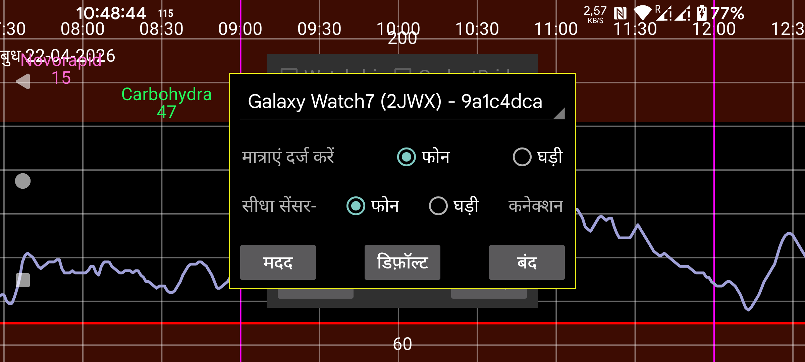

ar be de es fr hi it ja nl pl pt ru tr uk uz zh en
घड़ी पर संख्याएं (मात्राएं) दर्ज करें: फोन के बजाय घड़ी पर इंसुलिन, कार्बोहाइड्रेट और गतिविधि के लिए मात्राएं दर्ज करें (दूसरा मेन्यू→ “मात्रा”)। यदि आप फोन से Novopens स्कैन करना चाहते हैं, तो आपको इसे सेट नहीं करना चाहिए। यदि आप अपना फोन भूल गए हैं, तो आप अपनी घड़ी पर वही काम कर सकते हैं, बायां मेन्यू→सेंसर→स्विच के साथ।
सीधा सेंसर-घड़ी कनेक्शन: यह निर्धारित करता है कि क्या घड़ी को सीधे सेंसर से जुड़ा होना चाहिए। यह केवल तब बदला जा सकता है जब घड़ी और फोन सिंक में हों। फोन और घड़ी को सिंक करने के लिए फोन और घड़ी पर मिरर->सिंक और पुनः आरंभ का उपयोग करें। यदि आप घर से केवल अपनी घड़ी पहनकर निकलने से पहले “सीधा सेंसर-घड़ी कनेक्शन” चालू करना भूल गए, तो आप सीधे सेंसर को घड़ी से जोड़ने के लिए अपनी घड़ी पर बायां मेन्यू→सेंसर→स्विच दबा सकते हैं। जब फोन और घड़ी फिर से ब्लूटूथ पहुंच में हों, तो फोन को सेंसर से कनेक्ट होना बंद करने और मिरर कनेक्शन की दिशा उलटने के लिए एक संदेश भेजा जाता है।
वॉच ऐप आरंभ करें: अब आपको यह बटन दबाने की आवश्यकता नहीं है। यह अब स्वचालित रूप से होता है।
डिफ़ॉल्ट: यह कनेक्शन सेटिंग्स को उनके डिफ़ॉल्ट मानों पर सेट करता है। इसका उन सेटिंग्स से लेना-देना है जिन्हें बायां मेन्यू->मिरर में घड़ी पर और बायां मध्य मेन्यू->मिरर पर फोन पर बदला जा सकता है। इसमें "केवल सक्रिय" और "स्कैन” जैसी सेटिंग्स होती हैं। यह बटन तब दबाया जा सकता है जब सेटिंग्स स्नान के पानी से या नींद के दौरान गलती से बदल गई हों। यदि आप घड़ी संस्करण को पुनः इंस्टॉल करके या डेटा साफ़ करके रीसेट करते हैं, तो आपको फोन पर मिरर कनेक्शन को भी हटाना होगा।
Juggluco का एक विशेष संस्करण सीधे Wear OS घड़ी पर चल सकता है। सेंसर स्कैन करने के लिए इसे NFC वाले एक Android स्मार्टफ़ोन की आवश्यकता होती है और TCP कनेक्शन के माध्यम से यह डेटा Wear OS घड़ी को भेजा जाता है। इसके बाद दो संभावनाएं हैं:
सेंसर स्मार्टफ़ोन से जुड़ा रहता है और स्मार्टफ़ोन TCP के माध्यम से Wear OS घड़ी को ब्लूटूथ के माध्यम से प्राप्त प्रत्येक ग्लूकोज मान भेजता है;
सेंसर को सीधे Wear OS घड़ी से जोड़ना भी संभव है। इसके लिए आपको अच्छी ब्लूटूथ कनेक्टिविटी वाली एक Wear OS घड़ी की आवश्यकता है।
https://www.juggluco.nl/JugglucoWearOS पर कुछ चित्र दिखाए गए हैं
इसे काम करने के लिए निम्नलिखित करें:
सुनिश्चित करें कि घड़ी और फोन दोनों पर ब्लूटूथ और WIFI काम कर रहे हैं;
देखें कि घड़ी में पर्याप्त खाली भंडारण स्थान और RAM बचा है। यह संभव है कि Juggluco को पुनः इंस्टॉल करना पड़े यदि डिवाइस एक महत्वपूर्ण क्षण पर भंडारण स्थान से बाहर हो जाता है;
Juggluco के फोन संस्करण को सेंसर के साथ काम करने लायक बनाएं। आपको "ब्लूटूथ के माध्यम से सेंसर" सेट के साथ सेंसर को कुछ बार स्कैन करना होगा;
अपनी Wear OS घड़ी पर Juggluco का Wear OS संस्करण इंस्टॉल करें और इसे शुरू करें;
फोन पर, बायां मेन्यू->घड़ी->Wear OS Config पर जाएं। आपकी घड़ी स्पिनर में प्रदर्शित होनी चाहिए। "वॉच ऐप आरंभ करें" दबाएं;
यदि सब कुछ ठीक से हुआ, तो दोनों Juggluco में एक TCP कनेक्शन कॉन्फ़िगर किया जाता है और फोन पर सारा डेटा घड़ी को भेजा जाता है। यदि आप लंबे समय से Juggluco का उपयोग कर रहे हैं तो इसमें लंबा समय लग सकता है, ताकि बहुत सारा डेटा भेजना पड़े। आप मिरर डायलॉग में देखकर जांच सकते हैं कि TCP कनेक्शन कॉन्फ़िगर है या नहीं (फोन: बायां मध्य मेन्यू->मिरर, घड़ी: बायां-मेन्यू->मिरर)। आपकी घड़ी के लिए स्पिनर में दिखाई गई उसी id के साथ एक कनेक्शन दिखाया जाना चाहिए। घड़ी पर इसमें फोन का IP भी शामिल होना चाहिए। यदि वे वहाँ नहीं हैं या घड़ी की तरफ IP शामिल नहीं है, तो फिर से "वॉच ऐप आरंभ करें" दबाएं। यदि यह अभी भी वहाँ नहीं है, तो ब्लूटूथ कनेक्शन और आपकी घड़ी से कनेक्शन के लिए ज़िम्मेदार फोन ऐप की जांच करें। (जब घड़ी को पहले से डेटा मिल चुका है, तो "वॉच ऐप आरंभ करें" दबाने का प्रभाव सारा डेटा फिर से भेजना है, तो आप Juggluco के घड़ी संस्करण को पुनः इंस्टॉल भी कर सकते हैं। बाद में, यदि सही IP नहीं दिखाया जाता, तो आपको फोन पर बाहरी कनेक्शन (WIFI या Mobile data) बंद और चालू करना चाहिए।
यदि सब कुछ ठीक से हुआ, तो Juggluco के फोन संस्करण पर प्रदर्शित वही डेटा Juggluco के घड़ी संस्करण पर प्रदर्शित होता है। फोन द्वारा प्राप्त प्रत्येक नया ग्लूकोज मान TCP के माध्यम से घड़ी को भेजा जाता है। कुछ सेटिंग्स जैसे इकाई, ग्लूकोज अलार्म स्तर और अनुस्मारक भी घड़ी को भेजे जाते हैं। बाद के परिवर्तन घड़ी पर ही किए जाने चाहिए।
यदि आपके पास अच्छी ब्लूटूथ कनेक्टिविटी वाली एक स्मार्टवॉच है और आप अपने फोन को साथ ले जाने के बिना अपनी घड़ी पर ग्लूकोज मान प्राप्त करना चाहते हैं, तो आप Juggluco के घड़ी संस्करण को सीधे सेंसर से जोड़ सकते हैं। सारे मान घड़ी को भेजे जाने के बाद, आप "सीधा सेंसर-घड़ी कनेक्शन" चेक कर सकते हैं। इससे, फोन में "ब्लूटूथ का उपयोग" बंद हो जाता है और घड़ी में चालू हो जाता है। स्ट्रीम मान अब घड़ी से फोन को भेजे जाते हैं जैसा कि आप मिरर डायलॉग में देख सकते हैं। जब घड़ी और फोन सिंक में नहीं होते तो आप "सीधा सेंसर-घड़ी कनेक्शन" नहीं बदल सकते।
यदि सेंसर का घड़ी के साथ सीधा ब्लूटूथ कनेक्शन है और इसके मान एक स्मार्टफ़ोन को भेजे जाते हैं, तो स्कैन किए गए मान भी फोन से घड़ी को भेजे जाने चाहिए और Juggluco के साथ सेंसर को स्कैन करने से पहले स्ट्रीम मान सिंक होने चाहिए (सेटिंग्स स्वचालित रूप से इस तरह कॉन्फ़िगर की जाती हैं।) अन्यथा, पुराने मान घड़ी को वापस भेजे जा सकते हैं या संशोधित प्रमाणीकरण जानकारी घड़ी को नहीं भेजी जाती, जिसके परिणामस्वरूप हैंडशेक त्रुटियाँ होंगी।
कनेक्शन में परिवर्तन भी केवल तब किए जाने चाहिए जब डेटा सिंक्रनाइज़ हो; फोन और घड़ी पर डेटा पूर्ण प्रतियाँ होनी चाहिए (इस अपवाद के साथ कि आप सभी मात्रा-डेटा छोड़ सकते हैं)।
पहली बार, जब स्मार्टफ़ोन से घड़ी को बहुत सारा डेटा स्थानांतरित करना हो, तो आप घड़ी को चार्जर से जोड़ सकते हैं: मेरी घड़ी चार्जर से जुड़ने पर WIFI चालू कर देती है।
घड़ी-फोन कनेक्शन मिरर कनेक्शन का एक अनुकूलन है जिसे आप Juggluco चलाने वाले फोनों और Juggluco server चलाने वाले कंप्यूटरों के बीच कॉन्फ़िगर कर सकते हैं। जब फोन और घड़ी के बीच कनेक्शन उपरोक्त वर्णित तरीके से स्वचालित रूप से उत्पन्न होता है तो इसमें निम्नलिखित जोड़ होते हैं:
कनेक्शन के दूसरे पक्ष का IP स्वचालित रूप से निर्धारित होता है। सामान्यतः आपको मिरर कनेक्शन से सीधे कुछ करने की आवश्यकता नहीं है। इसके बजाय आप सेटिंग्स बदलने के लिए बायां मेन्यू→घड़ी→WearOS config का उपयोग कर सकते हैं। अपवाद तब है जब आप घड़ी पर संख्याएं दर्ज करना चाहते हैं। तब आपको मैन्युअल रूप से मिरर सेटिंग्स बदलनी होंगी जैसा कि घड़ी पर दर्ज करें के तहत वर्णित है।
यदि फोन और घड़ी के बीच WIFI कनेक्शन काम नहीं करता, तो Juggluco ब्लूटूथ के माध्यम से TCP के उपयोग पर स्विच करता है। सिवाय तब जब पहले उपयोग पर घड़ी को बहुत सारा डेटा भेजना हो, आप घड़ी पर WIFI बंद कर सकते हैं।
जब फोन और घड़ी पर Juggluco के बीच कोई डेटा आदान-प्रदान नहीं होता तो आप निम्नलिखित की जांच कर सकते हैं:
घड़ी और फोन पर ब्लूटूथ चालू होना चाहिए (WIFI बंद हो सकता है);
घड़ी का साथी ऐप प्रदर्शित करे कि घड़ी फोन से जुड़ी है;
घड़ी पर बायां मेन्यू→मिरर और फोन पर बायां मध्य मेन्यू→मिरर में घड़ी के पहचानकर्ता के साथ एक स्वचालित रूप से बनाई गई कनेक्शन प्रविष्टि होनी चाहिए (वही पहचानकर्ता जैसा फोन पर बायां मेन्यू→घड़ी→”WearOS config” में प्रदर्शित होता है।)
घड़ी पर बायां मेन्यू→मिरर में पुनः आरंभ और/या सिंक दबाने से मदद मिल सकती है;
कभी-कभी आपको वही फोन पर करने की आवश्यकता होती है। इसके बाद आपको इसे घड़ी पर फिर से करना पड़ सकता है;
फोन या घड़ी पर ब्लूटूथ बंद-और-चालू करने से मदद मिल सकती है। इसके बाद आपको घड़ी पर फिर से पुनः आरंभ और सिंक दबाना होगा;
WIFI या मोबाइल डेटा के साथ भी वही करना कभी-कभी आवश्यक होता है;
कभी-कभी ब्लूटूथ को फिर से काम करने के लिए फोन और/या घड़ी का रीबूट आवश्यक होता है;
यह संभव है कि किसी तरह मिरर कनेक्शन में सेटिंग्स गलत मानों में बदल गई हैं। आप फोन पर बायां मेन्यू→घड़ी→”WearOS config”→डिफ़ॉल्ट दबाकर उन्हें मूल मानों पर रीसेट कर सकते हैं। इसका प्रभाव सेंसर को घड़ी के बजाय फोन से जोड़ने का भी है। केवल घड़ी पर मौजूद डेटा ओवरराइड हो जाएगा;
यदि सब कुछ विफल हो गया, तो आप घड़ी संस्करण को पुनः इंस्टॉल करके फिर से शुरू कर सकते हैं। उस स्थिति में आपको बायां मध्य मेन्यू→मिरर के तहत मौजूदा घड़ी कनेक्शन को हटाना होगा।
यदि किसी तरह डेटा फोन पर अनुपस्थित है, पर घड़ी पर मौजूद है, तो यह बहुत अधिक कठिन है। किसी तरह आपको पहले फोन पर डेटा प्राप्त करने के लिए एक कार्यशील मिरर कनेक्शन बनाना होगा।
Wear OS के लिए Juggluco में एक वॉच फेस शामिल है जो आपके वर्तमान ग्लूकोज स्तर को समय और चार तक कॉम्प्लिकेशन्स के साथ प्रदर्शित करता है। इसका उपयोग करने के लिए, आपको इस वॉच फेस को चुनना होगा, उदाहरण के लिए, आपके वॉच साथी ऐप में "downloaded" के तहत। सामान्यतः, जब स्क्रीन जागती है तो आप अंतिम ग्लूकोज मान देखेंगे। जब स्क्रीन ambient (हमेशा चालू) मोड में होती है, तो ग्लूकोज मान केवल तब अपडेट होता है जब मिनट संकेतक उठाया जाता है, या जब आप एक बटन दबाते हैं या अपना हाथ उठाते हैं। तो प्रदर्शित मान एक मिनट तक विलंबित हो सकता है। वॉच फेस का उपयोग कुछ नई घड़ियों (उदाहरण के लिए Samsung Galaxy Watch 7 और Watch Ultra) के तहत नहीं किया जा सकता क्योंकि वे बैटरी जीवन को संरक्षित करने के प्रयास में प्रोग्राम किए गए वॉच फेस की अनुमति नहीं देते।
Juggluco 8.2.0 और उच्चतर में एक ग्लूकोज मान, ग्लूकोज तीर और तीर+मान कॉम्प्लिकेशन शामिल है जिसका उपयोग WearOS 5 के तहत भी किया जा सकता है। इसका उपयोग हर उस वॉच फेस के साथ किया जा सकता है जो एक छोटा या बड़ा छवि कॉम्प्लिकेशन स्लॉट स्वीकार करता है, उदाहरण के लिए Time and Track या Watchface for Juggluco। आप Watch Face Studio के साथ अपना खुद का वॉच फेस भी बना सकते हैं।
एक तीसरा विकल्प घड़ी पर Juggluco की सेटिंग्स में फ्लोटिंग ग्लूकोज चालू करना है। जब Juggluco के पास सही अनुमतियाँ होती हैं, तो अन्य ऐप्स के ऊपर एक ग्लूकोज मान प्रदर्शित होता है। इस तरह आप मनचाहे वॉच फेस या आपकी गतिविधि की निगरानी करने वाले ऐप्स का उपयोग करते हुए अपना वर्तमान ग्लूकोज मान देख सकते हैं। अधिक जानकारी के लिए, Juggluco के फोन संस्करण में, बायां मेन्यू -> सेटिंग्स -> फ्लोटिंग ग्लूकोज -> मदद देखें।
साथी ऐप से आप बायां मध्य मेन्यू→मिरर के तहत वर्णित तरीके से इंटरनेट पर अन्य डिवाइसों को भेज सकते हैं। घड़ी को सीधे इंटरनेट पर एक सर्वर से और उससे एक फॉलोअर फोन से जोड़ना भी संभव है जैसा कि वर्णित है: https://www.juggluco.nl/Juggluco/cmdline/watch